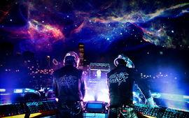

Daft Punk is a French electronic music duo consisting of musicians
Guy-Manuel de Homem-Christo and Thomas Bangalter.
Daft Punk reached significant
popularity in the late 1990s house movement in France and met
with continued success in the years following,
combining elements of house with synthpop.
The duo is credited with producing songs that
are considered essential in the French house scene.
Early in the group's career, the band members were influenced
by groups including The Beach Boys and The Rolling Stones.
Member History

Thomas Bangalter and Guy-Manuel de Homem-Christo met in 1987
while attending the Lycée Carnot,a secondary school in Paris.
The two became good friends and later recorded demo tracks with
others from the school. This eventually led to the formation of the guitar-
based group called Darlin' with Laurent Brancowitz in 1992. Bangalter and
de Homem-Christo played bass and guitar, respectively, while Brancowitz
performed on drums. The trio had branded themselves after
The Beach Boys song of the same name, which they covered along with
an original composition. Bangalter felt that "The rock n' roll thing we did was
pretty average, I think. It was so brief, maybe six months, four songs and two
gigs and that was it." A negative review in Melody Maker by Dave Jennings
subsequently dubbed the music "a daft punky thrash." Instead of dismissing
the review, they found it amusing. As de Homem-Christo stated,
"We struggled so long to find [the name] Darlin', and this happened so quickly."
Darlin' soon disbanded, leaving Brancowitz to pursue other efforts with Phoenix.
Bangalter and de Homem-Christo formed Daft Punk and experimented with
drum machines and synthesizers.